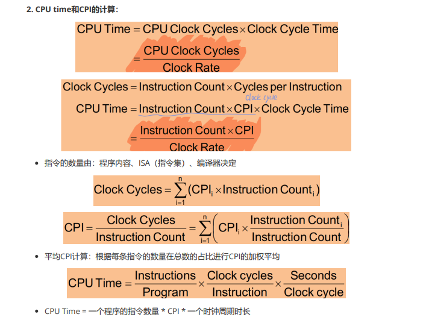
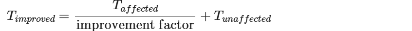
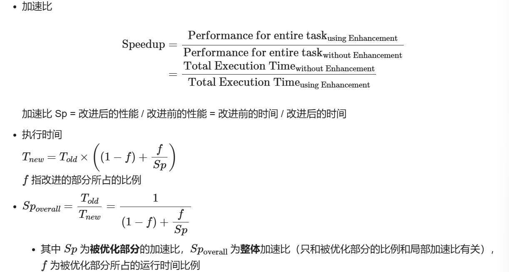
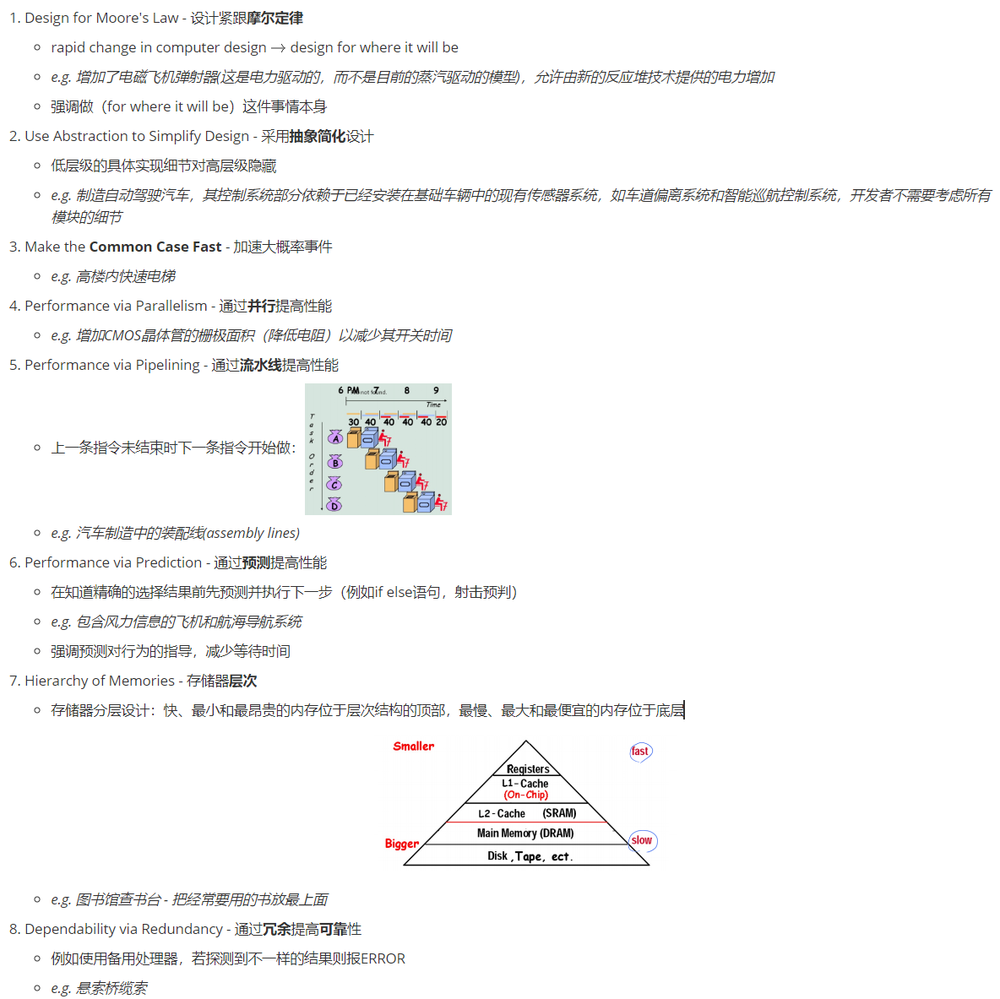
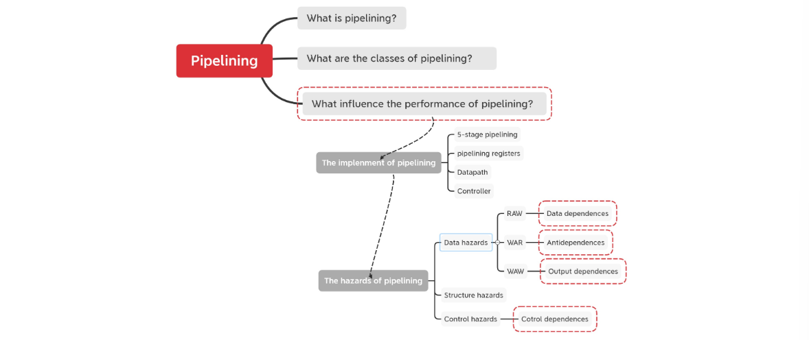

体系结构期末复习¶
开工时间：2024.12.20晚21:00
争取圣诞前拿下！（嗯
cr老师还没划重点，我先按我觉得是重点的理了（x
现在回过头来看chap0的ppt的一些废话：
- 感觉体系结构从某种程度上讲确实是哲学课
- 着眼于优化性能的设计理念以及why
- 不哲学一点讲体系结构就是软硬件协同部分的设计和原理
1 计算机设计基础¶
1.0 知识框架概述¶
计算机的发展基本可以概括为三个领域，对应三种特性：
- processing --- parallel
- transmission --- accuracy
- storage --- reliability
第一章就从顶层视角讲了一些如何量化评估performance以及一些设计的理念。
1.1 性能衡量¶
根据不同的用户需求，我们有衡量性能最基本的两个指标：
- PC用户 - 最短响应时间 \(\to\) Latency / Response time 响应时间 - 一个事件开始到结束的时间
- 大数据处理 - 最大吞吐量 \(\to\) Throughput / Bandwidth 带宽 - 给定时间范围内完成了多少工作量
对于单核处理器的性能评估，我们使用CPU time，具体有以下公式：

而涉及到系统性能收益的提升，我们有：
- Amdahl's Law - 单点优化对系统整体性能提升的收益

- 加速比 - 性能是执行时间的倒数，相关公式如下：

其实我觉得这块掌握基本概念就可以，倒也没必要死记硬背。
1.2 设计理念¶
从计组开始老生常谈的八大设计理念（会考吗（我不知道（我今天废话好多

1.3 ISA¶
指令集是什么？
- 我的理解是高级语言和机器语言的桥梁，人类能看懂的最low level的语言
指令集架构设计的几个问题（这些问题的不同决定了不同类型的指令集）：
- 操作数存哪 - 寄存器、内存、栈、累加器...
- 几个操作数 - 0、1、2、3...
- 操作寻址方式 - 寄存器、立即数、非直接寻址...
- 支持什么类型和大小的操作数 - 整数、浮点数、字符、字符串、向量...
- 支持什么操作类型 - 加、减、乘、比较、移动...
指令集架构设计原则：兼容，通用，高效，安全。
2 流水线¶
2.0 流水线概述¶

体系结构的流水线部分主要分为以下知识点：
- 指令执行方式：串行、有重叠、两次重叠、流水线...
- 流水线的分类：单功能/多功能（静态/动态）、不同粒度、线性/非线性、顺序/乱序、标量/向量处理器...
- 这块不额外理了，看到上述概念要清楚地知道区别，不清楚的可以查看课堂笔记
- 流水线性能评估：吞吐量、加速比、效率...
- 影响流水线性能的因素：流水线的设计、指令类型、指令相关性及其处理
- 冲突类型：
- 动态分支预测：BHT、BTB
- 流水线非线性规划问题
2.1 流水线的overlapping设计¶
实现流水线的本质是通过overlap。将指令进行分段后可以让每一段使用不同的部件，并行执行。
- 每段时间如果不一致会引起：
- 前面的阶段较长 - 资源浪费
- 后面的阶段较长 - 部件冲突
- 分成三段后的时间计算：
- 串行 - \(3n\Delta t\)
- Single overlap - \((2n+1)\Delta t\)
- Twice overlap - \((n+2)\Delta t\)
- trade-off是硬件更复杂了
- 流水线被分为几段称为流水线的深度
- 实现重叠的具体方式：
- I Mem和D Mem区分避免结构冲突
- 使用buffer缩短IF阶段时间使其和ID阶段合并
- 也可以使用buffer平滑每段时间的差异：使得两个流水线阶段不需要直接连接，可以有空隙，流水线执行时间完全取决于EX段
2.2 流水线性能评估¶
2.2.1 吞吐率Throughput¶
定义是\(\frac{指令数量}{执行时间}\)，没有量纲。
我们把最长的流水线段称为瓶颈段（时间为\(\Delta t\)），可以看到（推导出）\(TP_{max} = \frac{1}{\Delta t}\)
针对瓶颈段的优化方式有：
- subdivision - 给瓶颈段分段执行
- repetition - 在瓶颈段多使用几个部件并行执行
2.2.2 加速比Speedup¶
\(S_p = \dfrac{n\times m \times \Delta t_0}{(m+n-1)\times \Delta t_0} = \dfrac{n \times m}{m+n-1}\)，没有量纲。
在\(n >> m\)的时候加速比约等于段数\(m\)，但是受数据读取传输损耗影响，段数不能无限大。
2.2.3 效率Efficiency¶
具象化理解就是流水线时空图里面有颜色的占总长方形之比。单位是百分比。
\(\eta = \dfrac{n\times m \times \delta t_0}{m(m+n-1)\delta t_0} = \dfrac{n}{m+n-1}\)
在\(n >> m\)的时候效率约等于\(100\%\)。
记得看看这两道例题
2.3 流水线冒险¶
感觉这一块lab1和3写过都差不多清楚了，稍微理个框架吧。细节看课堂笔记
流水线的冒险可以分为以下几类：
- 结构冒险 - 多条指令征用同一种资源
- 解决方式：加bubble、加硬件、分I-cache和D-cache...
- 数据冒险
- Data dependence: RAW
- 可以通过调度指令解决
- 静态调度：编译器，程序运行前
- 动态调度：处理器，程序运行时
- Forwarding 和 Stalling - 需要清楚判断条件
- EX hazard
- MEM hazard (double hazard)
- Load-use hazard - 需要额外stall一拍
- 可以通过调度指令解决
- Name dependence: WAR/WAW
- Anti-dependence - 毫不相干的两个操作数使用了同一个寄存器
- Output-dependence - 两条指令的结果写到同一个寄存器内
- 在顺序流水线重命名寄存器即可解决，乱序流水线可能有冲突冒险
- Data dependence: RAW
- 控制冒险 - 采用分支预测减少stall
- 静态分支预测
- 延时槽
- 动态分支预测
- BTB - 1 bit、2 bits...
- BHT
- 这里也会有data hazard，处理思路也是能forward就forward，否则stall
- 静态分支预测
2.4 非线性流水线调度问题¶
// todo